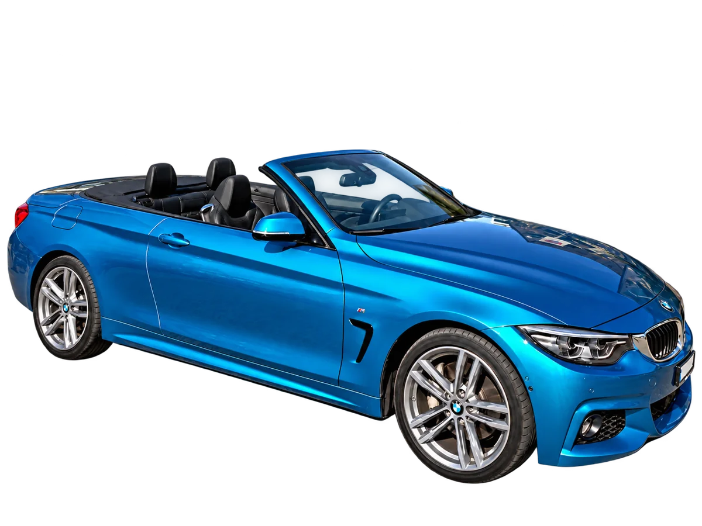
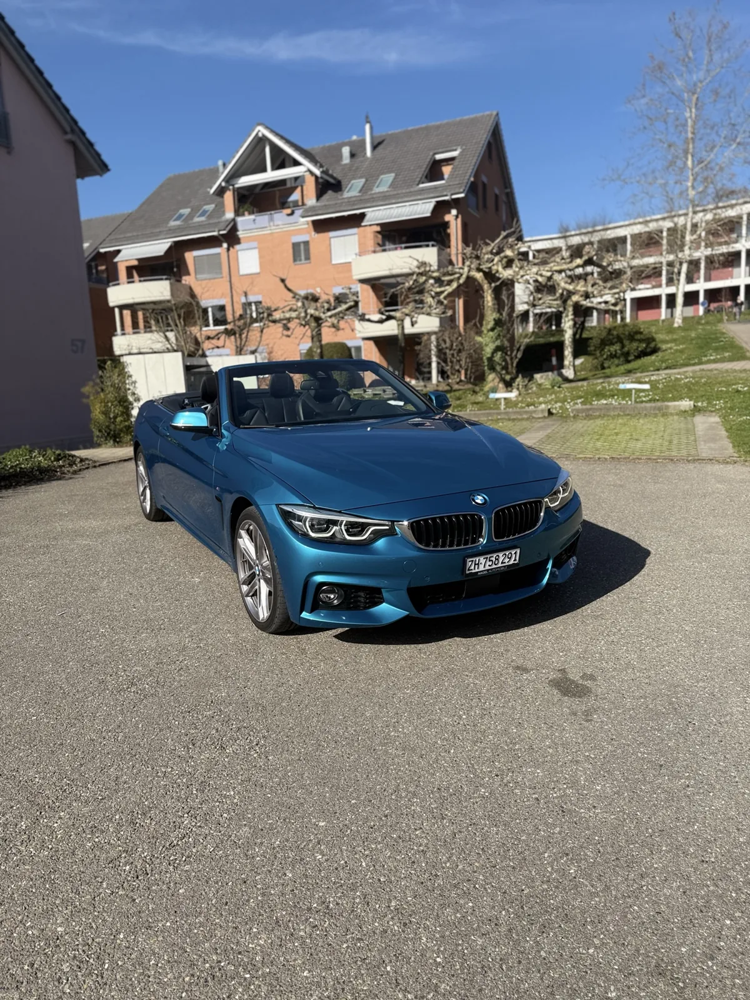
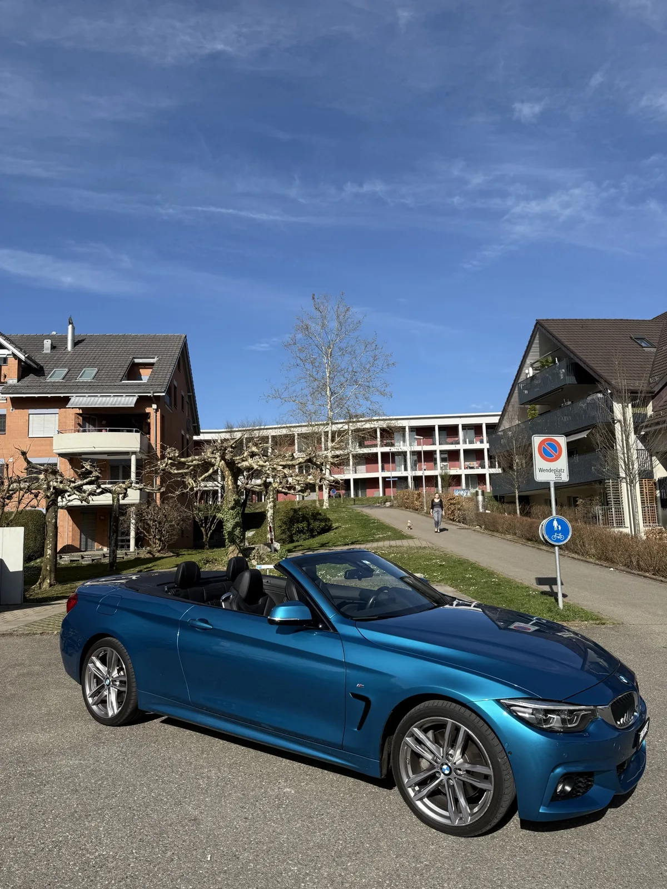
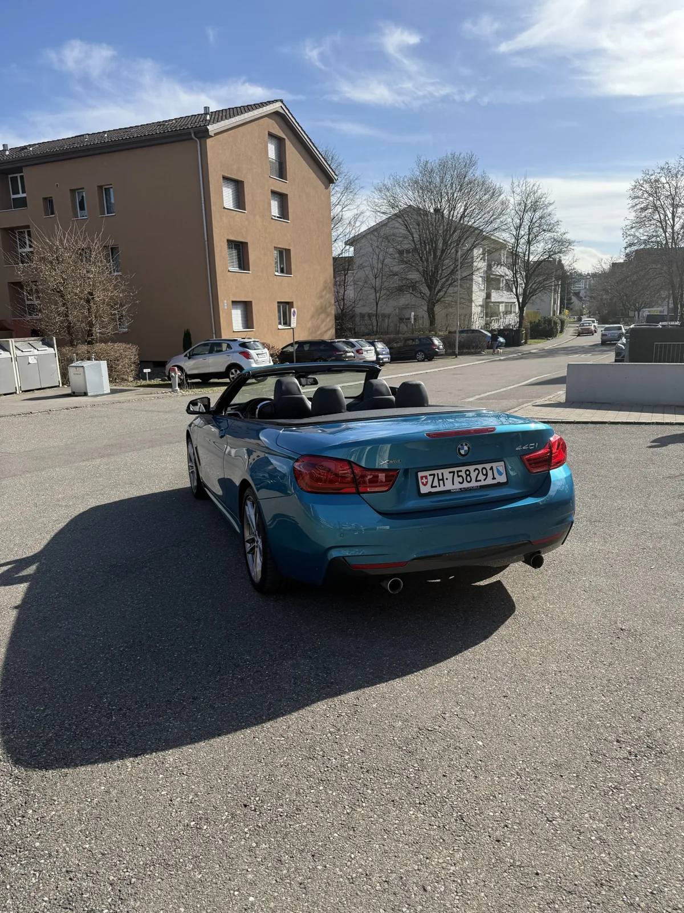

Tagesmiete
CHF 250 / Tag
300 km inklusive
Verfügbarkeit prüfenDas Dach öffnen und den Tag zur Ausfahrt machen. Mieten Sie unser blaues BMW 440i Cabriolet für Ihr Wochenende, einen Ausflug an den Zürichsee oder einen besonderen Anlass. 360 PS, ein kraftvoller, sportlicher Sound, Automatik und vier Sitzplätze machen jede Ausfahrt zum Erlebnis.
CHF 250 / Tag · 300 km inklusive
Bitte den BMW 440i ausdrücklich anfragen. Verfügbarkeit und Mietkonditionen bestätigen wir für Ihren Termin.

Mit 360 PS und sportlichem Sound durch Zürich: Wählen Sie Ihren Mietzeitraum und fragen Sie dieses BMW Cabriolet an.
CHF 250 / Tag
300 km inklusive
Verfügbarkeit prüfenFür längere Mietzeiten erstellen wir Ihnen gerne ein persönliches Angebot. Nennen Sie uns Ihren Zeitraum und die geplanten Kilometer.
Angebot anfragenSehen Sie sich das Mietfahrzeug aus verschiedenen Perspektiven an: Front, Seite und Heck mit geöffnetem Dach. Klicken Sie auf ein Bild für die grössere Ansicht.



Ein Cabrio mieten Sie für das Fahrerlebnis. Der BMW 440i verbindet 360 PS und einen markanten, sportlichen Sound mit offenem Fahrgefühl und dem Komfort eines Automatikfahrzeugs. Geniessen Sie die Fahrt zu zweit oder mit bis zu vier Personen.
Eine Ausfahrt entlang des Zürichsees, eine Pause am Wasser und ohne festen Zeitdruck zurück: Mit einem Cabriolet wird schon die Strecke zum Teil Ihres Wochenendes.
Für einen Ausflug Richtung Rapperswil oder ins Zürcher Oberland bietet das BMW Cabrio einen besonderen Blick auf die Landschaft. Stimmen Sie Mietdauer und geplante Kilometer vorab mit uns ab.
Geburtstag, gemeinsamer Ausflug oder Hochzeitswochenende: Fragen Sie den BMW 440i für Ihren Anlass an und klären Sie mit uns Abholung, Rückgabe und die gewünschte Mietdauer.
Sie suchen ein Cabriolet zur Miete im Raum Zürich? Swiss Rent a Car ist an der Schaffhauserstrasse 137 in 8302 Kloten erreichbar, nahe dem Flughafen Zürich. Fragen Sie den BMW 440i gezielt für Ihren Reisetermin an; den Abholort und die Übergabe stimmen wir mit Ihnen ab.
Auch für Gäste, die über den Flughafen Zürich anreisen, lässt sich die Cabrio-Miete vorab planen. Informationen zur Fahrzeugübernahme finden Sie bei unserem Mietwagen-Abholservice am Flughafen Zürich. Bitte klären Sie die konkrete Übergabe des BMW bei der Anfrage.
Das BMW 440i Cabriolet mieten Sie für CHF 250 pro Tag inklusive 300 km. Sie möchten das Cabrio länger mieten? Fordern Sie ein persönliches Angebot für Ihren Mietzeitraum an. Kaution, Versicherungsbedingungen und mögliche Mehrkilometer klären wir vor der Buchung.
Angebot für längere Miete anfragenAlles Wichtige zum BMW 440i, zum Preis und zu Ihrer Miete.
Teilen Sie uns Ihren Wunschtermin mit. Wir prüfen die Verfügbarkeit und besprechen alle Details für Ihre Cabrio-Miete in Zürich.